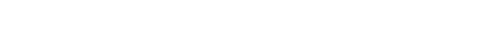

Emiliano Alvarez Gil Leyva
emialvarezg [at] ciencias.unam.mx



I'm a master's student at Instituto de Matemáticas, UNAM, in Mexico City. I'm interested
in discrete probability models and their scaling limits.
Previously, I obtained my B.Sc. in Applied Mathematics at Facultad de Ciencias, UNAM under the supervision of Saraí Hernández-Torres.
Thesis - Simulación de la evolución de Schramm-Loewner.
Simulations
Photos